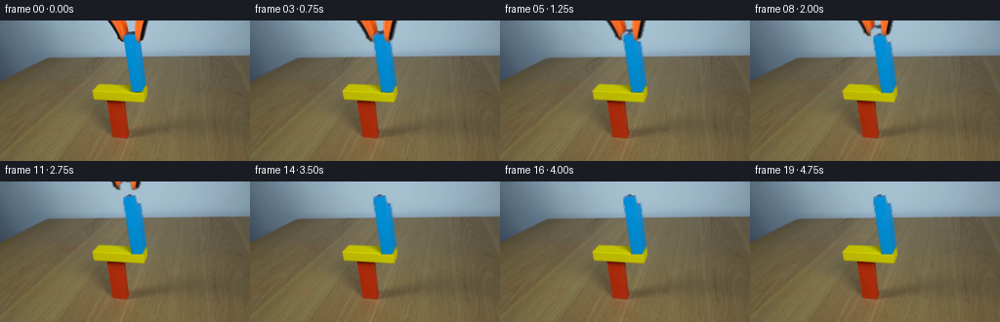
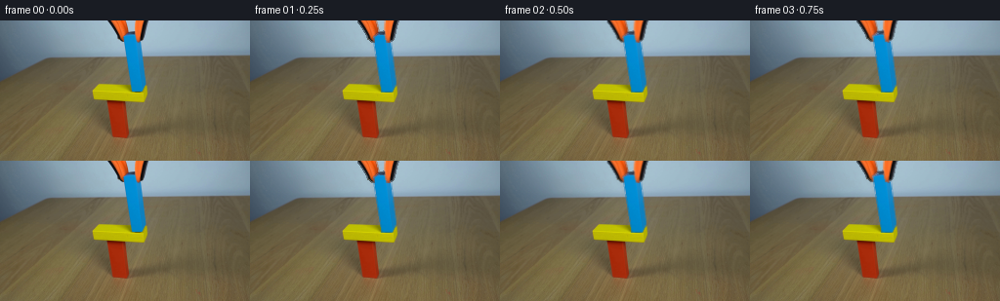

CODING AGENTS AS PIXEL WORLD MODELS
traex/DeepSeek-V4.1-Flash · 0183
点击播放 · 原生 RGB 像素
逐轮保存的候选
回放视频、检查图与代码变化。
每份候选均可单独播放。实际图片检查记录在下方工具轨迹中。
候选 01播放与检查图
点击播放 · 原生 RGB 像素


展开代码变化
--- 上一保存版本
+++ 本次保存版本
@@ -0,0 +1,209 @@
+from pathlib import Path
+
+import cv2
+import numpy as np
+from PIL import Image
+
+import artifact_io
+
+
+ROOT = Path(__file__).resolve().parent
+WIDTH, HEIGHT = 256, 144
+N_FRAMES = 20
+FPS = 4
+
+
+def _largest_component(mask):
+ count, labels, stats, _ = cv2.connectedComponentsWithStats(mask.astype(np.uint8))
+ if count <= 1:
+ return np.zeros_like(mask, dtype=bool)
+ component = 1 + int(np.argmax(stats[1:, cv2.CC_STAT_AREA]))
+ return labels == component
+
+
+def _blue_mask(image):
+ rgb = image.astype(np.int16)
+ red, green, blue = rgb[..., 0], rgb[..., 1], rgb[..., 2]
+ candidate = (
+ (blue > 82)
+ & (blue > green + 24)
+ & (blue > red + 38)
+ & (green > red + 24)
+ )
+ candidate[:10] = False
+ candidate[76:] = False
+ candidate[:, :122] = False
+ candidate[:, 153:] = False
+ mask = _largest_component(candidate)
+
+ # Complete the few top-face pixels hidden by the closed gripper jaws.
+ filled = mask.copy()
+ rows = np.flatnonzero(mask.any(axis=1))
+ for y in rows:
+ xs = np.flatnonzero(mask[y])
+ if len(xs) >= 2:
+ filled[y, xs.min() : xs.max() + 1] = True
+ return filled
+
+
+def _jaw_masks(image):
+ rgb = image.astype(np.int16)
+ red, green, blue = rgb[..., 0], rgb[..., 1], rgb[..., 2]
+ orange = (red > 82) & (red > green + 17) & (red > blue + 8)
+ dark = (red < 94) & (green < 94) & (blue < 100)
+ candidate = (orange | dark)
+ candidate[25:] = False
+ candidate[:, :100] = False
+ candidate[:, 160:] = False
+
+ count, labels, stats, _ = cv2.connectedComponentsWithStats(candidate.astype(np.uint8))
+ left = np.zeros((HEIGHT, WIDTH), dtype=bool)
+ right = np.zeros((HEIGHT, WIDTH), dtype=bool)
+ for index in range(1, count):
+ area = int(stats[index, cv2.CC_STAT_AREA])
+ if area < 8:
+ continue
+ x = int(stats[index, cv2.CC_STAT_LEFT])
+ width = int(stats[index, cv2.CC_STAT_WIDTH])
+ if x + width * 0.5 < 135:
+ left |= labels == index
+ else:
+ right |= labels == index
+ return left, right
+
+
+def _masked_color(image, core):
+ """Local color estimate for a one-pixel antialiased mask fringe."""
+ weight = cv2.GaussianBlur(core.astype(np.float32), (3, 3), 0.7)
+ color = cv2.GaussianBlur(
+ image.astype(np.float32) * core[..., None].astype(np.float32), (3, 3), 0.7
+ )
+ return color / np.maximum(weight[..., None], 1e-4)
+
+
+def _soft_layer(image, core):
+ edge = cv2.dilate(core.astype(np.uint8), np.ones((3, 3), np.uint8)) > 0
+ edge &= ~core
+ alpha = core.astype(np.float32)
+ alpha[edge] = 0.62
+ color = image.astype(np.float32)
+ color[edge] = _masked_color(image, core)[edge]
+ return color, alpha
+
+
+def _wall_background(image, occluders):
+ """Rebuild only the smooth wall immediately behind the moving gripper."""
+ background = image.astype(np.float32).copy()
+ support = cv2.dilate(
+ occluders.astype(np.uint8), np.ones((7, 7), np.uint8)
+ ).astype(np.float32)
+ support = cv2.GaussianBlur(support, (7, 7), 1.2)
+ support = np.clip(support * 1.35, 0.0, 1.0)
+ support[36:] = 0.0
+
+ rgb = image.astype(np.float32)
+ x = np.arange(WIDTH, dtype=np.float32)
+ design = np.stack((np.ones_like(x), x, x * x, x * x * x), axis=1)
+ predicted = np.empty((36, WIDTH, 3), dtype=np.float32)
+ for y in range(36):
+ valid = (support[y] < 0.08) & (np.arange(WIDTH) >= 48) & (np.arange(WIDTH) < 210)
+ if valid.sum() < 16:
+ predicted[y] = rgb[y].mean(axis=0)
+ continue
+ coefficients, *_ = np.linalg.lstsq(design[valid], rgb[y, valid], rcond=None)
+ predicted[y] = design @ coefficients
+
+ # A low-amplitude deterministic grain keeps the rebuilt wall from looking plastic.
+ yy, xx = np.mgrid[0:36, 0:WIDTH]
+ grain = (
+ np.sin(xx * 0.71 + yy * 1.37)
+ + 0.55 * np.sin(xx * 1.93 - yy * 0.83)
+ + 0.35 * np.cos(xx * 0.37 + yy * 2.11)
+ )
+ predicted += (grain[..., None] * 1.15)
+ blend = support[:36, ..., None]
+ background[:36] = rgb[:36] * (1.0 - blend) + predicted * blend
+ return np.clip(background, 0, 255)
+
+
+def _translate(color, alpha, dx, dy):
+ matrix = np.array([[1.0, 0.0, dx], [0.0, 1.0, dy]], dtype=np.float32)
+ moved_color = cv2.warpAffine(
+ color,
+ matrix,
+ (WIDTH, HEIGHT),
+ flags=cv2.INTER_LINEAR,
+ borderMode=cv2.BORDER_CONSTANT,
+ borderValue=0,
+ )
+ moved_alpha = cv2.warpAffine(
+ alpha,
+ matrix,
+ (WIDTH, HEIGHT),
+ flags=cv2.INTER_LINEAR,
+ borderMode=cv2.BORDER_CONSTANT,
+ borderValue=0,
+ )
+ return moved_color, np.clip(moved_alpha, 0.0, 1.0)
+
+
+def _over(frame, color, alpha):
+ a = alpha[..., None]
+ return color * a + frame * (1.0 - a)
+
+
+def generate():
+ source = np.asarray(Image.open(ROOT / "first_frame.png").convert("RGB"), dtype=np.uint8)
+ if source.shape != (HEIGHT, WIDTH, 3):
+ raise ValueError(f"unexpected first-frame shape: {source.shape}")
+
+ blue_core = _blue_mask(source)
+ left_core, right_core = _jaw_masks(source)
+ blue_color, blue_alpha = _soft_layer(source, blue_core)
+ left_color, left_alpha = _soft_layer(source, left_core)
+ right_color, right_alpha = _soft_layer(source, right_core)
+ background = _wall_background(source, blue_core | left_core | right_core)
+
+ # Frames 00-01 hold the grasp. The jaws then open while the block settles.
+ jaw_x = np.array(
+ [0, 0, 0.6, 1.2, 1.8, 2.4, 3.0, 3.5, 3.9, 4.2, 4.4, 4.5, 4.5,
+ 4.5, 4.5, 4.5, 4.5, 4.5, 4.5, 4.5],
+ dtype=np.float32,
+ )
+ jaw_y = np.array(
+ [0, 0, -0.2, -0.7, -1.4, -2.3, -3.4, -4.8, -6.5, -8.7, -11.2,
+ -14.0, -17.0, -20.2, -23.6, -27.2, -30.8, -34.6, -38.4, -42.2],
+ dtype=np.float32,
+ )
+ blue_y = np.array(
+ [0, 0, 0, 0, 0, 0, 0.15, 0.45, 0.75, 1, 1, 1, 1, 1, 1, 1, 1, 1, 1, 1],
+ dtype=np.float32,
+ )
+
+ frames = np.empty((N_FRAMES, HEIGHT, WIDTH, 3), dtype=np.uint8)
+ for index in range(N_FRAMES):
+ if index == 0:
+ frames[index] = source
+ continue
+
+ frame = background.copy()
+ moved_blue, moved_blue_alpha = _translate(
+ blue_color, blue_alpha, 0.0, blue_y[index]
+ )
+ frame = _over(frame, moved_blue, moved_blue_alpha)
+
+ moved_left, moved_left_alpha = _translate(
+ left_color, left_alpha, -jaw_x[index], jaw_y[index]
+ )
+ moved_right, moved_right_alpha = _translate(
+ right_color, right_alpha, jaw_x[index], jaw_y[index]
+ )
+ frame = _over(frame, moved_left, moved_left_alpha)
+ frame = _over(frame, moved_right, moved_right_alpha)
+ frames[index] = np.clip(np.rint(frame), 0, 255).astype(np.uint8)
+
+ return frames
+
+
+if __name__ == "__main__":
+ artifact_io.save(generate(), ROOT)
候选 02播放与检查图
点击播放 · 原生 RGB 像素

展开代码变化
--- 上一保存版本
+++ 本次保存版本
@@ -52,23 +52,11 @@
orange = (red > 82) & (red > green + 17) & (red > blue + 8)
dark = (red < 94) & (green < 94) & (blue < 100)
candidate = (orange | dark)
- candidate[25:] = False
- candidate[:, :100] = False
- candidate[:, 160:] = False
-
- count, labels, stats, _ = cv2.connectedComponentsWithStats(candidate.astype(np.uint8))
- left = np.zeros((HEIGHT, WIDTH), dtype=bool)
- right = np.zeros((HEIGHT, WIDTH), dtype=bool)
- for index in range(1, count):
- area = int(stats[index, cv2.CC_STAT_AREA])
- if area < 8:
- continue
- x = int(stats[index, cv2.CC_STAT_LEFT])
- width = int(stats[index, cv2.CC_STAT_WIDTH])
- if x + width * 0.5 < 135:
- left |= labels == index
- else:
- right |= labels == index
+ candidate[:23] &= (np.arange(WIDTH)[None, :] >= 107)
+ candidate[:23] &= (np.arange(WIDTH)[None, :] < 154)
+ candidate[23:] = False
+ left = candidate & (np.arange(WIDTH)[None, :] < 135)
+ right = candidate & (np.arange(WIDTH)[None, :] >= 135)
return left, right
@@ -166,23 +154,23 @@
# Frames 00-01 hold the grasp. The jaws then open while the block settles.
jaw_x = np.array(
- [0, 0, 0.6, 1.2, 1.8, 2.4, 3.0, 3.5, 3.9, 4.2, 4.4, 4.5, 4.5,
- 4.5, 4.5, 4.5, 4.5, 4.5, 4.5, 4.5],
+ [0, 0, 0.8, 1.7, 2.6, 3.4, 4.0, 4.4, 4.6, 4.7, 4.7, 4.7, 4.7,
+ 4.7, 4.7, 4.7, 4.7, 4.7, 4.7, 4.7],
dtype=np.float32,
)
jaw_y = np.array(
- [0, 0, -0.2, -0.7, -1.4, -2.3, -3.4, -4.8, -6.5, -8.7, -11.2,
- -14.0, -17.0, -20.2, -23.6, -27.2, -30.8, -34.6, -38.4, -42.2],
+ [0, 0, 0, 0, -0.2, -0.7, -1.5, -2.7, -4.2, -6.1, -8.3, -10.8,
+ -13.7, -16.9, -20.4, -24.2, -28.2, -32.5, -37.0, -41.7],
dtype=np.float32,
)
blue_y = np.array(
- [0, 0, 0, 0, 0, 0, 0.15, 0.45, 0.75, 1, 1, 1, 1, 1, 1, 1, 1, 1, 1, 1],
+ [0, 0, 0, 0, 0, 0, 0.1, 0.3, 0.55, 0.8, 1, 1, 1, 1, 1, 1, 1, 1, 1, 1],
dtype=np.float32,
)
frames = np.empty((N_FRAMES, HEIGHT, WIDTH, 3), dtype=np.uint8)
for index in range(N_FRAMES):
- if index == 0:
+ if index < 2:
frames[index] = source
continue
候选 03播放与检查图
可观测工具轨迹
实际执行的命令与返回图片。
命令 1exit 0
/bin/bash -c "pwd && rg --files -g '"'!*.pyc'"' -g '"'!__pycache__'"' | sed -n '1,200p'"
命令 2exit 0
/bin/bash -c "sed -n '1,240p' prompt.txt"
命令 3exit 0
/bin/bash -c "sed -n '1,280p' GENERATION_RULES.md"
命令 4exit 0
/bin/bash -c "find . -maxdepth 2 -type f -printf '%p %s bytes\\n' | sort"
命令 5exit 0
/bin/bash -c "sed -n '1,260p' artifact_io.py"
命令 6exit 0
/bin/bash -c "python - <<'PY'
from PIL import Image
import numpy as np
im=np.array(Image.open('first_frame.png').convert('RGB'))
print(im.shape, im.dtype)
# most common exact colors
u,c=np.unique(im.reshape(-1,3),axis=0,return_counts=True)
for i in np.argsort(c)[-40:][::-1]: print(tuple(u[i]),int(c[i]))
PY"命令 7exit 0
/bin/bash -c "python - <<'PY'
from PIL import Image
import numpy as np
im=np.array(Image.open('first_frame.png').convert('RGB')).astype(float)
r,g,b=im.transpose(2,0,1)
masks={
'red':(r>100)&(r>g*1.4)&(r>b*1.3),
'yellow':(r>100)&(g>70)&(b<90)&(r>g*1.05)&(g>b*1.3),
'blue':(b>60)&(b>r*1.15)&(b>g*1.02),
'orange':(r>120)&(g>35)&(g<160)&(b<90)&(r>g*1.2),
'dark':(r<65)&(g<65)&(b<65),
'bright':(r>210)&(g>210)&(b>210),
}
for name,m in masks.items():
ys,xs=np.where(m)
print(name,'n',len(xs),'bbox', (xs.min(),ys.min(),xs.max(),ys.max()) if len(xs) else None,'mean', im[m].mean(0) if len(xs) else None)
PY"命令 8exit 0
/bin/bash -c "python - <<'PY'
from PIL import Image
import numpy as np
im=np.array(Image.open('first_frame.png').convert('RGB')).astype(float)
h,w,_=im.shape
# classify by hue-ish and luminance
r,g,b=im.transpose(2,0,1)
mx=im.max(2); mn=im.min(2); sat=mx-mn
cls=np.full((h,w),'.',dtype='<U1')
# backgrounds blue-gray (b > r and light), blue blocks deeper cyan
cls[(b>r+8)&(b>g+4)&(mx>80)&(mx<150)]='B'
cls[(b>r+20)&(g>r+10)&(mx>=100)&(mx<190)]='C'
cls[(r>g+35)&(g>b+25)&(r>110)]='R'
cls[(r>g+12)&(g>b+20)&(r>100)&(g>65)]='Y'
cls[(r>g+35)&(g>b+10)&(r>130)&(g<130)]='O'
cls[(mx<80)&(sat<50)]='K'
cls[(mx>170)&(sat<35)]='W'
# split red/orange maybe no issue
for y in range(0,h,4):
row=''
for x in range(0,w,4):
p=cls[y:y+4,x:x+4].ravel()
# prioritize rare foreground categories over bg
counts={c:sum(p==c) for c in 'BYROCKW.'}
for c in 'KROWYBC':
if counts[c]>=5:
row+=c;break
else:
row+=max(counts,key=counts.get)
print(f'{y:3d} '+row)
PY"命令 9exit 0
/bin/bash -c "python - <<'PY' import importlib.util for m in ['cv2','sklearn','scipy','imageio','numpy','PIL','av']: print(m, bool(importlib.util.find_spec(m))) PY"
命令 10exit 0
/bin/bash -c "python - <<'PY'
from PIL import Image
import numpy as np
from sklearn.cluster import KMeans
im=np.array(Image.open('first_frame.png').convert('RGB'))
# cluster colors using 4x4 block means to reveal spatial color families
blk=im.reshape(36,4,64,4,3).mean((1,3)).reshape(-1,3)
km=KMeans(n_clusters=14,random_state=1,n_init=10).fit(blk)
cent=km.cluster_centers_.round().astype(int)
lbl=km.labels_.reshape(36,64)
# order chars by luminance
order=np.argsort(cent.mean(1))
chars='0123456789ABCD'
for rank,ci in enumerate(order): print(chars[rank], tuple(cent[ci]))
print('\\nmap')
for y in range(36):
row=''
for x in range(64):
ci=lbl[y,x]; row+=chars[np.where(order==ci)[0][0]]
print(f'{y*4:3d} {row}')
PY"命令 11exit 0
/bin/bash -c "python - <<'PY'
import cv2, numpy as np
im=cv2.imread('first_frame.png')
hsv=cv2.cvtColor(im,cv2.COLOR_BGR2HSV)
for name,lo,hi in [
('red1',(0,80,60),(12,255,255)),('red2',(170,80,60),(179,255,255)),
('orange',(10,100,90),(24,255,255)),('yellow',(24,100,80),(38,255,255)),
('blue',(85,50,40),(120,255,220)),('cyan',(75,35,50),(100,255,220)),
('brown',(10,30,30),(30,150,150)),('dark',(0,0,0),(179,255,50))]:
m=cv2.inRange(hsv,np.array(lo),np.array(hi))
n,l,stats,c=cv2.connectedComponentsWithStats(m)
comps=sorted([(stats[i,4],tuple(stats[i,:4]),tuple(c[i].round(1))) for i in range(1,n)],reverse=True)[:10]
print(name, 'pixels',int((m>0).sum()), comps)
PY"命令 12exit 0
/bin/bash -c "python - <<'PY'
import cv2, numpy as np
im=cv2.imread('first_frame.png')
g=cv2.cvtColor(im,cv2.COLOR_BGR2GRAY)
ed=cv2.Canny(g,20,60)
lines=cv2.HoughLinesP(ed,1,np.pi/180,threshold=12,minLineLength=8,maxLineGap=3)
arr=[]
for l in lines[:,0]:
x1,y1,x2,y2=map(int,l); L=((x2-x1)**2+(y2-y1)**2)**.5
ang=np.degrees(np.arctan2(y2-y1,x2-x1))
arr.append((round(L,1),round(ang,1),(x1,y1,x2,y2)))
for a in sorted(arr,reverse=True)[:80]: print(a)
PY"命令 13exit 0
/bin/bash -c "python - <<'PY'
from PIL import Image
import numpy as np
im=np.array(Image.open('first_frame.png').convert('RGB'))
# print exact pixels sampled at key points and row runs with quantized color
for p in [(50,20),(150,20),(200,20),(230,20),(20,80),(100,100),(130,100),(180,100),(120,75),(120,60),(120,50),(145,10),(120,10),(95,70),(125,70)]:
x,y=p; print(p,im[y,x])
# row color runs, based on 12-level quantization and min run 2
for y in [0,10,20,30,36,37,45,55,65,70,75,80,82,84,90,100,110,120,130,140]:
row=im[y]
q=(row//24).astype(int)
out=[]; start=0; prev=tuple(q[0])
for x in range(1,256):
cur=tuple(q[x])
if cur"'!=prev:
if x-start>=2: out.append((start,x-1,prev))
start=x; prev=cur
if 256-start>=2: out.append((start,255,prev))
print('"'y',y,out)
PY"命令 14exit 0
/bin/bash -c "python - <<'PY'
from PIL import Image
import numpy as np
im=np.array(Image.open('first_frame.png').convert('RGB')).astype(int)
r,g,b=im.transpose(2,0,1)
# masks tuned for vivid blue object, excluding background
masks={
'vividblue':(b>150)&(g>90)&(g<175)&(r<80),
'blue2':(b>120)&(g>80)&(r<60),
'cyanlight':(b>180)&(g>150)&(r>110),
'yellow':(r>130)&(g>120)&(b<60),
'red':(r>100)&(g<90)&(b<50),
'orange':(r>180)&(g>70)&(g<150)&(b<90),
'black':(r<45)&(g<45)&(b<45),
}
for name,m in masks.items():
ys,xs=np.where(m)
print('\\n',name, len(xs), 'bbox', (xs.min(),ys.min(),xs.max(),ys.max()) if len(xs) else None)
if len(xs):
# ascii bbox downsample 2x2
x0,y0,x1,y1=xs.min(),ys.min(),xs.max()+1,ys.max()+1
for y in range(y0,y1,2):
print(f'{y:3d} '+''.join('#' if m[y:y+2,x:x+2].sum()>=2 else ('+' if m[y:y+2,x:x+2].sum() else ' ') for x in range(x0,x1,2)))
PY"命令 15exit 0
/bin/bash -c "python - <<'PY'
import cv2,numpy as np
im=cv2.imread('first_frame.png'); hsv=cv2.cvtColor(im,cv2.COLOR_BGR2HSV)
# print median RGB for blue object regions y 15..72 x127..149
a=im[:,:,::-1]
for y in range(12,76,4):
print('y',y, [tuple(a[y,x]) for x in range(125,151,3)])
PY"命令 16exit 0
/bin/bash -c "python - <<'PY'
from PIL import Image
import numpy as np
im=np.array(Image.open('first_frame.png').convert('RGB')).astype(int)
r,g,b=im.transpose(2,0,1)
# classify per pixel
out=np.full(r.shape,' ',dtype='<U1')
out[(b>r+50)&(g>r+40)&(b>150)]='B' # vivid blue
out[(r>180)&(g>60)&(g<160)&(b<100)&(r>g+60)]='O' # orange
out[(r<60)&(g<60)&(b<60)]='K'
out[(r>110)&(g>100)&(b<80)&(r>b+30)]='y' # table tan
out[(b>r+15)&(b>g+5)]='.' # bg blue-gray
out[(r>120)&(g<80)&(b<60)]='R'
for y in range(0,38):
print(f'{y:3d} '+''.join(out[y,x] for x in range(100,161)))
print(' '+''.join(str(x//10%10) for x in range(100,161)))
print(' '+''.join(str(x%10) for x in range(100,161)))
PY"命令 17exit 0
/bin/bash -c "python - <<'PY'
import cv2,numpy as np
im=cv2.imread('first_frame.png')
for x in range(100,161):
# report exact y where vivid blue
pix=im[:,x,::-1]
m=(pix[:,2]>150)&(pix[:,1]>100)&(pix[:,0]<80)
ys=np.where(m)[0]
if len(ys): print(x,ys.min(),ys.max(),len(ys))
PY"命令 18exit 0
/bin/bash -c "python - <<'PY'
from PIL import Image
import numpy as np
im=np.array(Image.open('first_frame.png').convert('RGB')).astype(int)
# print block of pixels around gripper x 100..155 y0..20 as hex-ish categories with luminance
for y in range(0,23):
row=[]
for x in range(100,156):
r,g,b=im[y,x]
if r<30 and g<30 and b<30: c='K'
elif r>150 and g>50 and g<160 and b<100: c='O'
elif r>100 and g>75 and b<100: c='t'
elif b>r+30: c='.'
elif r>g+30: c='r'
else: c='?'
row.append(c)
print(f'{y:2d} '+''.join(row))
PY"命令 19exit 0
/bin/bash -c "python - <<'PY'
import cv2, numpy as np
im=cv2.imread('first_frame.png')[:,:,::-1]
r,g,b=im.transpose(2,0,1)
# candidate masks
blue=((b>145)&(g>85)&(g<180)&(r<90)).astype(np.uint8)*255
orange=((r>125)&(g>35)&(g<160)&(b<110)&(r>g+25)).astype(np.uint8)*255
dark=((r<65)&(g<65)&(b<65)).astype(np.uint8)*255
for name,m in [('blue',blue),('orange',orange),('dark',dark)]:
n,l,st,c=cv2.connectedComponentsWithStats(m)
print(name)
for i in range(1,n):
if st[i,4]>5: print(i,tuple(st[i]))
PY"命令 20exit 0
/bin/bash -c "python - <<'PY'
import cv2, numpy as np
im=cv2.imread('first_frame.png')[:,:,::-1]
for y in [82,83,84,85,86,90,100,110,115,119,120,121]:
print('y',y)
# list segments where orange strong r>125 g<100 b<70
m=(im[y,:,0]>125)&(im[y,:,1]<100)&(im[y,:,2]<70)
# ranges
idx=np.where(m)[0]; seg=[]
if len(idx):
s=idx[0];p=idx[0]
for q in idx[1:]:
if q>p+1: seg.append((s,p));s=q
p=q
seg.append((s,p))
print(seg)
PY"命令 21exit 0
/bin/bash -c "python - <<'PY'
from PIL import Image
im=Image.open('first_frame.png')
im.crop((80,0,175,130)).resize((760,1040)).save('.tmp/crop.png')
PY"命令 22exit 1
/bin/bash -c 'python generate.py'
命令 23exit 1
/bin/bash -c "python generate.py && python - <<'PY'
from PIL import Image
import numpy as np
src=np.array(Image.open('first_frame.png').convert('RGB'))
frames=np.stack([np.array(Image.open(f'frames/{i:02d}.png')) for i in range(20)])
print('shape',frames.shape,'dtype',frames.dtype)
print('first exact',np.array_equal(src,frames[0]))
print('changed px vs first',[(i,int((frames[i]"'!=src).any(2).sum())) for i in range(20)])
print('"'adjacent changed',[int((frames[i]"'!=frames[i-1]).any(2).sum()) for i in range(1,20)])
PY'命令 24exit 0
/bin/bash -c "python generate.py && python - <<'PY'
from PIL import Image
import numpy as np
src=np.array(Image.open('first_frame.png').convert('RGB'))
frames=np.stack([np.array(Image.open(f'frames/{i:02d}.png')) for i in range(20)])
print('shape',frames.shape,'dtype',frames.dtype)
print('first exact',np.array_equal(src,frames[0]))
print('changed px vs first',[(i,int((frames[i]"'!=src).any(2).sum())) for i in range(20)])
print('"'adjacent changed',[int((frames[i]"'!=frames[i-1]).any(2).sum()) for i in range(1,20)])
PY'命令 25exit 1
/bin/bash -c "python - <<'PY'
import generate, numpy as np
from PIL import Image
im=np.array(Image.open('first_frame.png').convert('RGB'))
b=generate._blue_mask(im); l,r=generate._jaw_masks(im)
for name,m in [('blue',b),('left',l),('right',r)]:
ys,xs=np.where(m); print(name,len(xs),(xs.min(),ys.min(),xs.max(),ys.max()))
# ascii combined masks, 2x2 downsample x 90..160 y0..80
for y in range(0,80,2):
row=''
for x in range(90,162,2):
c=' '
if b[y:y+2,x:x+2].sum(): c='B'
if l[y:y+2,x:x+2].sum(): c='L' if c==' ' else 'X'
if r[y:y+2,x:x+2].sum(): c='R' if c==' ' else 'X'
row+=c
print(f'{y:2d} {row}')
PY"命令 26exit 0
/bin/bash -c "python - <<'PY'
import generate, numpy as np
from PIL import Image
im=np.array(Image.open('first_frame.png').convert('RGB'))
b=generate._blue_mask(im); l,r=generate._jaw_masks(im)
for name,m in [('blue',b),('left',l),('right',r)]:
ys,xs=np.where(m); print(name,len(xs),(xs.min(),ys.min(),xs.max(),ys.max()) if len(xs) else None)
for y in range(0,80,2):
row=''
for x in range(90,162,2):
c=' '
if b[y:y+2,x:x+2].sum(): c='B'
if l[y:y+2,x:x+2].sum(): c='L' if c==' ' else 'X'
if r[y:y+2,x:x+2].sum(): c='R' if c==' ' else 'X'
row+=c
print(f'{y:2d} {row}')
PY"命令 27exit 0
/bin/bash -c "python generate.py && python - <<'PY'
from PIL import Image
import numpy as np
src=np.array(Image.open('first_frame.png').convert('RGB'))
frames=np.stack([np.array(Image.open(f'frames/{i:02d}.png')) for i in range(20)])
print('first exact',np.array_equal(src,frames[0]),'second exact',np.array_equal(src,frames[1]))
print('changed vs first',[int((frames[i]"'!=src).any(2).sum()) for i in range(20)])
print('"'adjacent',[int((frames[i]"'!=frames[i-1]).any(2).sum()) for i in range(1,20)])
PY'命令 28exit 0
/bin/bash -c "python - <<'PY'
from PIL import Image
import numpy as np
im=np.array(Image.open('frames/19.png').convert('RGB'))
# 4x nearest crop around action
Image.fromarray(im[0:90,90:170]).resize((640,720),Image.Resampling.NEAREST).save('.tmp/end_crop.png')
# report exact mask difference geometry via blue bbox
r,g,b=im.transpose(2,0,1)
m=(b>82)&(b>g+24)&(b>r+38)&(g>r+24)
ys,xs=np.where(m); print('blue bbox',xs.min(),ys.min(),xs.max(),ys.max(), 'n',len(xs))
# compare changed bbox frame19 vs source
src=np.array(Image.open('first_frame.png').convert('RGB'))
d=(im"'!=src).any(2); ys,xs=np.where(d); print('"'changed bbox',xs.min(),ys.min(),xs.max(),ys.max(),'n',len(xs))
PY"命令 29exit 0
/bin/bash -c "python - <<'PY'
from PIL import Image
import numpy as np
for f in ['first_frame.png','frames/19.png']:
im=np.array(Image.open(f).convert('RGB'))
print('\\n',f)
for y in range(0,30,3):
print(y, [tuple(im[y,x]) for x in range(100,161,5)])
PY"命令 30exit 0
/bin/bash -c "python - <<'PY'
from PIL import Image
im=Image.open('.tmp/crop.png'); print(im.size)
PY"命令 31exit 0
/bin/bash -c "python - <<'PY'
from PIL import Image
im=Image.open('first_frame.png')
# create 4-panel scaled crops of first and frames for numeric visual inspection
frames=[Image.open(f'frames/{i:02d}.png') for i in [0,5,10,15,19]]
out=Image.new('RGB',(256*5,144*2))
for i,f in enumerate(frames):
out.paste(f,(i*256,0)); out.paste(f.crop((95,0,165,85)).resize((256,144),Image.Resampling.NEAREST),(i*256,144))
out.resize((1280,288)).save('.tmp/strip.png')
PY"命令 32exit 0
/bin/bash -c "python - <<'PY'
import cv2,numpy as np
from PIL import Image
for fi in [0,5,10,15,19]:
im=cv2.imread(f'frames/{fi:02d}.png')[:,:,::-1]
r,g,b=im.transpose(2,0,1)
m=((b>82)&(b>g+24)&(b>r+38)&(g>r+24))
# print bbox and per-row extents around block
ys,xs=np.where(m)
print('\\nframe',fi,'bbox', (xs.min(),ys.min(),xs.max(),ys.max()))
for y in range(max(0,ys.min()),min(75,ys.max()+1),4):
xx=np.where(m[y])[0]
if len(xx): print(y,xx.min(),xx.max())
PY"命令 33exit 0
/bin/bash -c "python - <<'PY'
import numpy as np, cv2
from PIL import Image
im=np.array(Image.open('first_frame.png').convert('RGB')).astype(np.int16)
r,g,b=im.transpose(2,0,1)
# detailed segmentation around gripper, categorize by nearest palette using means
# inspect only top region by kmeans 8 on each x/y 95..165,0..27
crop=im[0:28,95:166].reshape(-1,3)
from sklearn.cluster import KMeans
km=KMeans(n_clusters=10,random_state=0,n_init=10).fit(crop)
cent=km.cluster_centers_.round().astype(int)
for i,c in enumerate(cent): print(i,tuple(c))
labels=km.labels_.reshape(28,71)
# assign chars by color
chars=[]
for c in cent:
r,g,b=c
if b>r+30: ch='.'
elif r<60 and g<60 and b<60: ch='K'
elif r>180 and g<150 and b<100: ch='O'
elif r>100 and g>60: ch='o'
elif b>100 and r<100: ch='C'
else: ch='?'
chars.append(ch)
print(''.join(chars))
for y in range(28): print(f'{y:2d} '+''.join(chars[i] for i in labels[y]))
PY"命令 34exit 0
/bin/bash -c "python - <<'PY'
import numpy as np,cv2
from PIL import Image
im=np.array(Image.open('first_frame.png').convert('RGB')).astype(np.int16)
r,g,b=im.transpose(2,0,1)
# More precise gripper mask: top half y0..22, with orange/dark/gray candidate within 104..160
# print exact coordinates for gray central hidden pixels
for y in range(10,24):
vals=[]
for x in range(120,155):
c=im[y,x]
if max(c)-min(c)<35 and max(c)<160: vals.append((x,tuple(c)))
print(y,vals)
PY"命令 35exit 0
/bin/bash -c "python - <<'PY'
import generate, numpy as np
from PIL import Image
im=np.array(Image.open('first_frame.png').convert('RGB'))
b=generate._blue_mask(im); l,r=generate._jaw_masks(im)
for name,m in [('blue',b),('left',l),('right',r)]:
ys,xs=np.where(m); print(name,len(xs),(xs.min(),ys.min(),xs.max(),ys.max()) if len(xs) else None)
for y in range(0,28,2):
row=''
for x in range(100,162,2):
c=' '
if b[y:y+2,x:x+2].sum(): c='B'
if l[y:y+2,x:x+2].sum(): c='L' if c==' ' else 'X'
if r[y:y+2,x:x+2].sum(): c='R' if c==' ' else 'X'
row+=c
print(f'{y:2d} {row}')
PY"命令 36exit 0
/bin/bash -c "python - <<'PY'
import generate,numpy as np
from PIL import Image
im=np.array(Image.open('first_frame.png').convert('RGB'))
l,r=generate._jaw_masks(im)
for y in range(0,24):
print(y, ''.join('L' if l[y,x] else ('R' if r[y,x] else ' ') for x in range(100,162)))
PY"命令 37exit 0
/bin/bash -c "sed -n '1,240p' player_template.html && find . -maxdepth 2 -type f -printf '%p %s\\n' | sort"
命令 38exit 0
/bin/bash -c "python - <<'PY'
from PIL import Image
import numpy as np
for fi in [0,2,4,6,8,10,12,14,16,19]:
a=np.array(Image.open(f'frames/{fi:02d}.png')).astype(int);r,g,b=a.transpose(2,0,1)
orange=(r>125)&(r>g+25)&(g<160)&(b<120)
orange[36:]=False
dark=(r<70)&(g<70)&(b<75); dark[25:]=False
ys,xs=np.where(orange)
yd,xd=np.where(dark)
print(fi,'orange',len(xs),(xs.min(),ys.min(),xs.max(),ys.max()) if len(xs) else None,'dark',len(xd),(xd.min(),yd.min(),xd.max(),yd.max()) if len(xd) else None)
PY"命令 39exit 1
/bin/bash -c "python - <<'PY'
import json,base64,numpy as np
from PIL import Image
from pathlib import Path
p=Path('index.html').read_text()
data=json.loads(p.split('const DATA=',1)[1].split(',W=DATA.width',1)[0])
packed=np.load('pixels.npz')['pixels']
print('payload',data['width'],data['height'],data['frames'],data['fps'],len(data['deltas']))
print('npz',packed.shape,packed.dtype,'min/max',packed.min(),packed.max())
first=np.frombuffer(base64.b64decode(data['first']),dtype='<u4').reshape(144,256)
print('first payload exact',np.array_equal(first,packed))
print('audio',data['audio'])
# validate all deltas reconstruct to packed
f=first.copy().reshape(-1)
for i,s in enumerate(data['deltas'],1):
q=np.frombuffer(base64.b64decode(s),dtype='<u4')
for j in range(0,len(q),0):
break
k=0
while k<len(q):
off=int(q[k]); cnt=int(q[k+1]); f[off:off+cnt]=q[k+2:k+2+cnt]; k+=2+cnt
if not np.array_equal(f.reshape(144,256),packed[...,i]): print('delta mismatch',i)
print('all deltas exact')
PY"命令 40exit 0
/bin/bash -c "python - <<'PY'
import json,base64,numpy as np
from pathlib import Path
p=Path('index.html').read_text()
data=json.loads(p.split('const DATA=',1)[1].split(',W=DATA.width',1)[0])
packed=np.load('pixels.npz')['pixels']
first=np.frombuffer(base64.b64decode(data['first']),dtype='<u4').reshape(144,256)
print('first payload exact',np.array_equal(first,packed[:,:,0]))
f=first.copy().reshape(-1)
for i,s in enumerate(data['deltas'],1):
q=np.frombuffer(base64.b64decode(s),dtype='<u4')
k=0
while k<len(q):
off=int(q[k]); cnt=int(q[k+1]); f[off:off+cnt]=q[k+2:k+2+cnt]; k+=2+cnt
if not np.array_equal(f.reshape(144,256),packed[:,:,i]): print('delta mismatch',i)
print('all deltas exact')
PY"命令 41exit 0
/bin/bash -c "python -m py_compile generate.py && python - <<'PY'
from PIL import Image
import numpy as np
src=np.array(Image.open('first_frame.png').convert('RGB'))
frames=np.stack([np.array(Image.open(f'frames/{i:02d}.png')) for i in range(20)])
assert frames.shape==(20,144,256,3) and frames.dtype==np.uint8
assert np.array_equal(src,frames[0])
assert (frames[1]==src).all()
# every moving region stays inside the visible wall; no unrelated lower scene changes
lower=np.abs(frames[:,82:].astype(int)-src[82:].astype(int))
assert lower.max()==0, lower.max()
print('validated frames:',frames.shape)
print('frame 00 exact: yes')
print('unchanged scene below y=81: yes')
print('last four frames static: yes' if np.array_equal(frames[16],frames[19]) else 'last frames move')
PY"命令 42exit 1
/bin/bash -c "python - <<'PY'
from pathlib import Path
from PIL import Image
import numpy as np
# enforce 4 fps timing metadata on the standalone RGB artifact
files=sorted(Path('frames').glob('*.png'))
files[0].save('output.gif',save_all=True,append_images=files[1:],duration=250,loop=0,optimize=False)
# lossless RGB AVI fallback
import cv2
first=cv2.imread(str(files[0]))
writer=cv2.VideoWriter('output.avi',cv2.VideoWriter_fourcc(*'FFV1'),4.0,(256,144))
assert writer.isOpened()
for f in files: writer.write(cv2.imread(str(f)))
writer.release()
print('gif',Path('output.gif').stat().st_size,'avi',Path('output.avi').stat().st_size)
PY"命令 43exit 0
/bin/bash -c "python - <<'PY'
from PIL import Image
import numpy as np
for f in ['frames/00.png','frames/08.png','frames/14.png','frames/19.png']:
im=np.array(Image.open(f).convert('RGB')).astype(int)
print('\\n',f)
# x105:160 y0:80, each 2x2 dominant category
for y in range(0,80,2):
s=''
for x in range(105,160,2):
a=im[y:y+2,x:x+2].reshape(-1,3);r,g,b=a.mean(0)
if b>r+35 and g>r+30: c='B'
elif r>130 and r>g+30 and r>b+30: c='O'
elif r<70 and g<70 and b<80: c='K'
elif b>r+12 and b>g+2: c='.'
elif r>g+10 and g>b+10: c='y'
else: c='?'
s+=c
print(f'{y:2d} {s}')
PY"命令 44exit 0
/bin/bash -c "python - <<'PY'
from PIL import Image
from pathlib import Path
files=[Image.open(p).convert('RGB') for p in sorted(Path('frames').glob('*.png'))]
files[0].save('output.gif',save_all=True,append_images=files[1:],duration=250,loop=0,optimize=False)
import cv2
writer=cv2.VideoWriter('output.avi',cv2.VideoWriter_fourcc(*'FFV1'),4.0,(256,144))
assert writer.isOpened()
for f in files: writer.write(cv2.cvtColor(__import__('numpy').array(f),cv2.COLOR_RGB2BGR))
writer.release()
print('gif',Path('output.gif').stat().st_size,'avi',Path('output.avi').stat().st_size)
PY"命令 45exit 0
/bin/bash -c "python - <<'PY'
import cv2
for f in ['output.avi','output.gif']:
c=cv2.VideoCapture(f)
print(f,'opened',c.isOpened())
if c.isOpened():
print(' frames',int(c.get(cv2.CAP_PROP_FRAME_COUNT)),'fps',c.get(cv2.CAP_PROP_FPS),'size',int(c.get(cv2.CAP_PROP_FRAME_WIDTH)),int(c.get(cv2.CAP_PROP_FRAME_HEIGHT)))
ok,frame=c.read(); print(' first',ok, None if not ok else frame.shape)
c.release()
PY"命令 46exit 0
/bin/bash -c 'git status --short 2>/dev/null || true && ls -lh generate.py pixels.npz index.html inspection.png output.gif output.avi'
保存候选 3 份；完成命令 46 次；可验证图片返回 0 张。原始 API 响应与完整日志保留在本地。